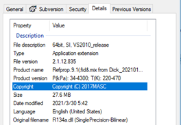

How to add new refrigerant in BOLT¶
This document is the property of Carrier Corporation and is delivered on the express condition that it is not to be disclosed, reproduced in whole or in part, or used for manufacture by anyone other than Carrier Corporation without its written consent, and that no right is granted to disclose or so use any information provided in this document.
Guide for implementation of custom refrigerants in IMPACT-BOLT 1.0¶
NOTE:
All the implementation steps are executed with installer, with a valid “CustomRefrigerant” folder provided by SRDC MASC team.
If the library is already installed before the custom refrigerant implementation, please re-launch the library installer and select “Repair” for custom refrigerant implementation.
If you are requesting new custom refrigerants, or if you have any feedback or questions about the implementation process, please contact MASC team from SRDC (Yunxin.wang@carrier.com).
STEP 0:
Before implementation, please check custom refrigerant files you received. It should contain:
Folder named “CustomRefrigerant RXXX X.X” including:
RXXX.dll: 64bit with SI unit refrigerant DLL files. This file is provided by Dick if NDA refrigerant, provided by SRDC if not. Please take this file with this Windchill link and verify the DLL file information[1]:
RXXX.mo: .mo files for refrigerant package used in Dymola.
package.order: .order files used in Dymola for package order.
package.mo: .mo files used in Dymola.
Resources: a subfolder containing onPath.json file.
RefrigerantProperty: a subfolder containing several modelica .mo files. This subfolder exists only for R-515B refrigerant.
[1] To check refrigerant DLL file information, you can right click on DLL file -> Select “Properties” -> Select “Details” tab, you can find all information in this tab:

Each refrigerant DLL file has a 4-digit number file version, the second number related to interface version. For example, the refrigerant DLL file with figure above is with interface version V1, because second number is “1” (2.1.12.835).
NOTE:
If you miss any of above file or folders in the provided custom refrigerant package, that means something might be wrong and please contact MASC team from SRDC (Yunxin.wang@carrier.com) to confirm.
STEP 1:
If this is the first time you receive this custom refrigerant folder:
Please copy this custom refrigerant folder at somewhere in your PC (not suggested to put it into “libraries” folder of installed IMPACT-BOLT, suggest remove “RXXX” from folder name).
For example, change name “CustomRefrigerant R290 2.0” to “CustomRefrigerant 2.0”.
If already have a custom refrigerant folder in your PC: Please just copy all refrigerant RXXX.mo & RXXX.dll into one custom refrigerant folder. If it contains R-515B, then you should also make sure **“RefrigerantProperty”**subfolder existed in custom refrigerant folder.
For example, if you have 3 refrigerant .mo and .dll file recently provided, put all these 3 refrigerant .mo and .dll files into “CustomRefrigerant 2.0” which already existed on your PC and this folder should contain all necessary file in STEP 0.
.
NOTE:
please put all the custom refrigerant .mo and .dll files you want implement into this CustomRefrigerant X.X folder, to make sure they are well-implemented into all BOLT libraries.
STEP 2:
Please use IMPACT-BOLT library installer to implement the custom refrigerant into IMPACT-BOLT, by following library installer instruction file.